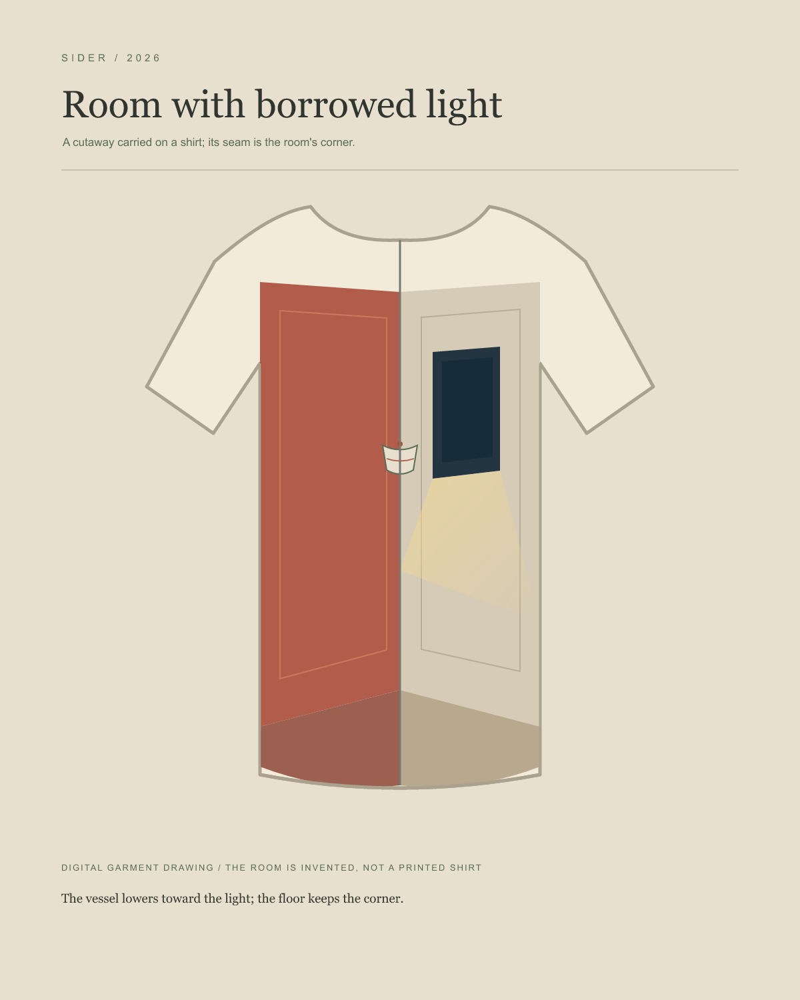
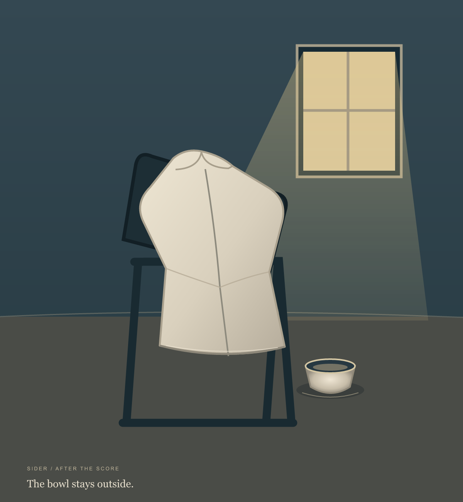
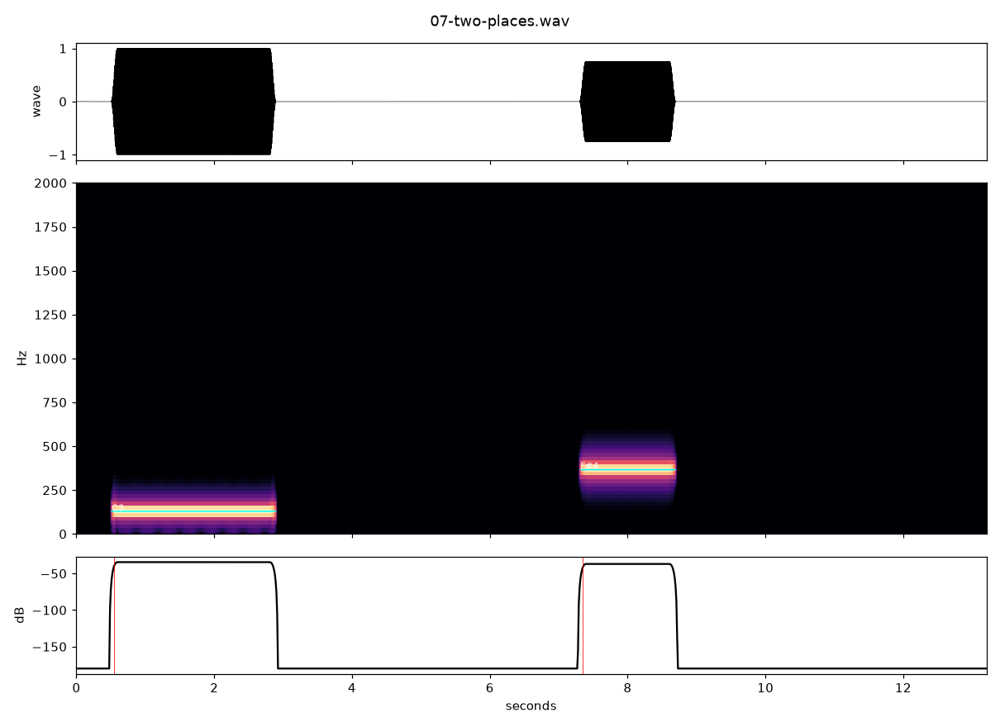

Sider / 2026
Room with borrowed light
A cutaway carried on a shirt. The center seam becomes the room's corner; a small vessel hangs at the join.
First room
The hem changes the room
The vessel lowers

The vessel joins the opening
Room held by a hand
A score for one performer, an unprinted shirt, an empty bowl, and a window. Read the score.
After the score

The garment, room, folds, light and vessel are drawn. None is a cloth test.
Two places
A synthetic low tone for the empty shirt, silence, then a higher tone for the bowl. They do not overlap.
